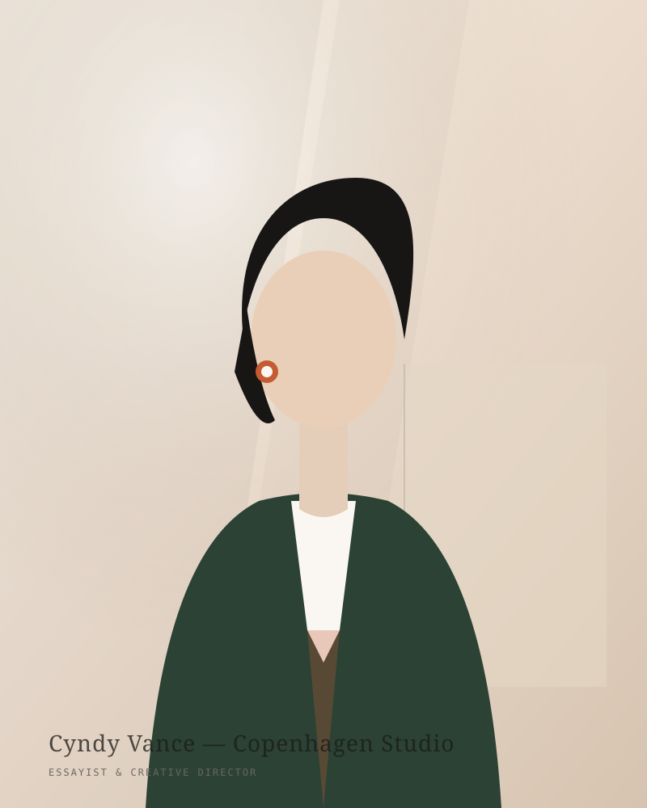

Writing from the quiet seam between form and contemplation.
I am an essayist, architectural researcher, and creative director currently living between Copenhagen and New York. I started this journal as an intentional antidote to the hyper-compressed velocity of the algorithmic internet.
Here, we examine how physical spaces, analog rituals, and sovereign, lightweight software can preserve our capacity for deep attention. When not drafting at my oak table with a fountain pen, you will likely find me haunting secondhand bookstores or walking through misty coastal pine forests.
A Wandering Path
Independent Literary Journal
Launched the sovereign web edition of Cyndy, fully decoupled from corporate social platforms and proprietary algorithms.
Architectural Research in Copenhagen
Fieldwork investigating tactile acoustic materials, daylight orientation, and Scandinavian minimalist dwellings.
Editorial Director for Design Monograph
Curated print volumes on modern typography, hand-binding techniques, and contemporary spatial design.
Around the Desk
Pilot Custom 823 Fountain Pen
Amber vacuum-filler with a fine nib, charged with Iroshizuku Yama-guri ink.
In Praise of Shadows — Jun'ichirō Tanizaki
The quintessential essay on subtle lacquerware, paper partitions, and the beauty of dusk.
Harold Budd & Brian Eno — The Pearl
Delicate ambient piano textures for mornings of intense manuscript drafting.